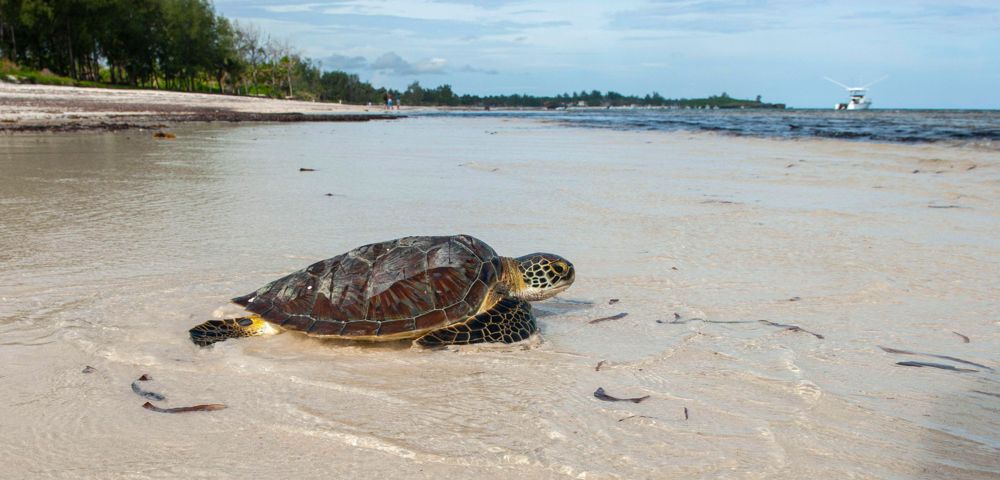

Only seven sea turtle species exist, with the majority of them on the edge of extinction. These are some of the world's biggest turtles. They live their whole lives in the open ocean and only come ashore to deposit their eggs.
Sea turtles are reptiles that need to breathe to survive. Their life expectancy is expected to be in the range of 80 years.
3
Natural predators such as raccoons, birds, crabs, and ants are among the risks that a sea turtle faces. They will either consume the sea turtle eggs or the hatchlings when they attempt to cross into open water.
Trash, fishing equipment, and humans collecting sea turtles for their shells are all hazards to sea turtles. It

Sea turtles are available in a variety of sizes, shapes, and colours. The olive ridley usually weighs less than 100 pounds, whereas the leatherback weighs between 650 and 1,300 pounds! Each sea turtle species' upper shell, or carapace, varies in length, colour, shape, and scale arrangement.
Sea turtles lack teeth, but their jaws have modified "beaks" that are tailored to their nutrition.
They have eardrums that are covered by skin and do not have visible ears. Low-frequency hearing is greatest for them, and their sense of smell is exceptional. Their vision is good underwater, but they are nearsighted when they are not in the water. They are amazingly adapted to living at sea due to their streamlined body and huge flippers. Sea turtles, on the other hand, have strong attachments to land.
All sea turtles begin their lives as small hatchlings on land, as they must come ashore to lay their eggs in the sand.